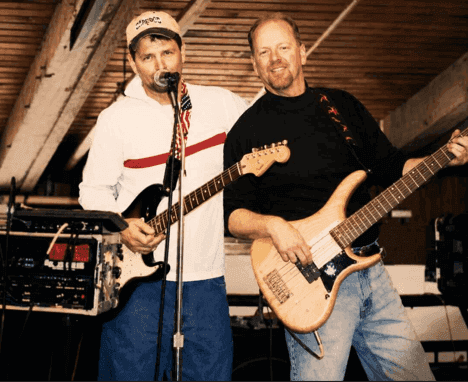

The Cape Cod Slackers are powered by the talent, personality, and musical chemistry of Hollywood and Mark Hennessy. Together, they built a reputation across Cape Cod for lively performances, crowd-favorite songs, and the kind of energy that keeps audiences singing, dancing, and coming back for more. Mark was known throughout the Cape music scene for his incredible talent and for playing with numerous local bands, while Hollywood brings his own style, stage presence, and connection with the crowd to every performance. As The Cape Cod Slackers, the duo became a local favorite by blending great musicianship with a fun, laid-back atmosphere that feels right at home on Cape Cod. Their music reflects not only their love of performing, but also their deep connection to the community and the fans who have supported them over the years.